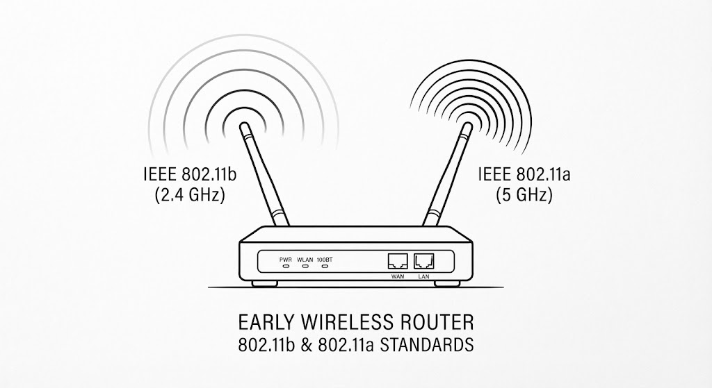
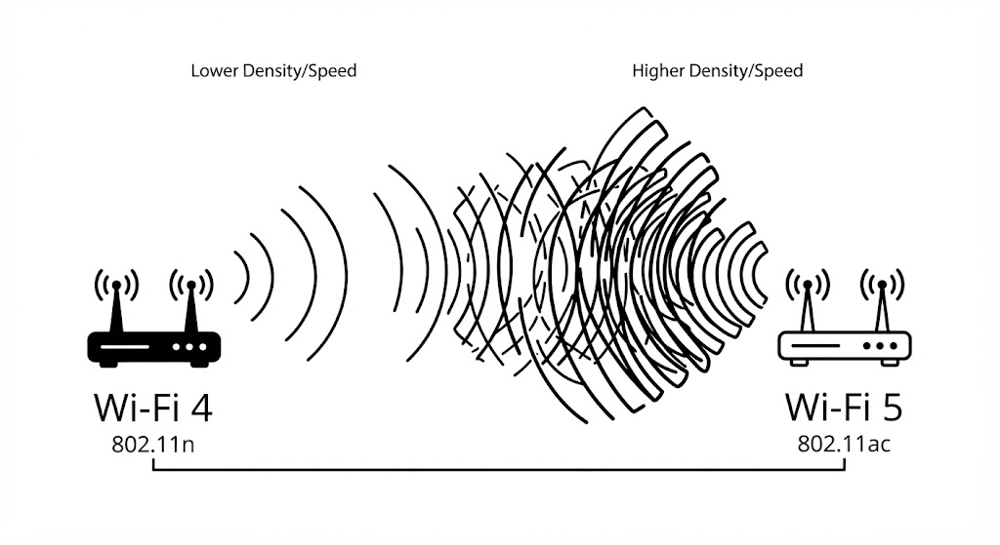
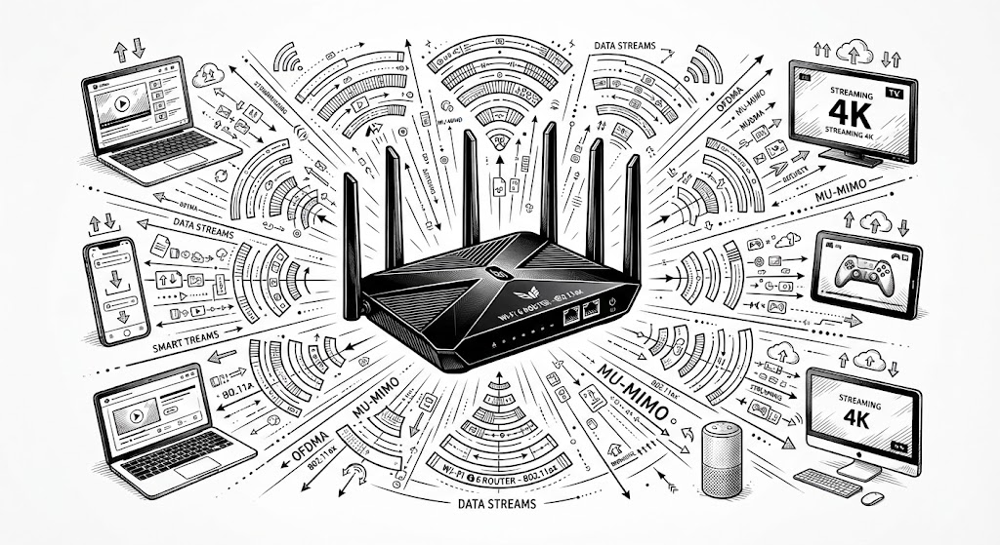
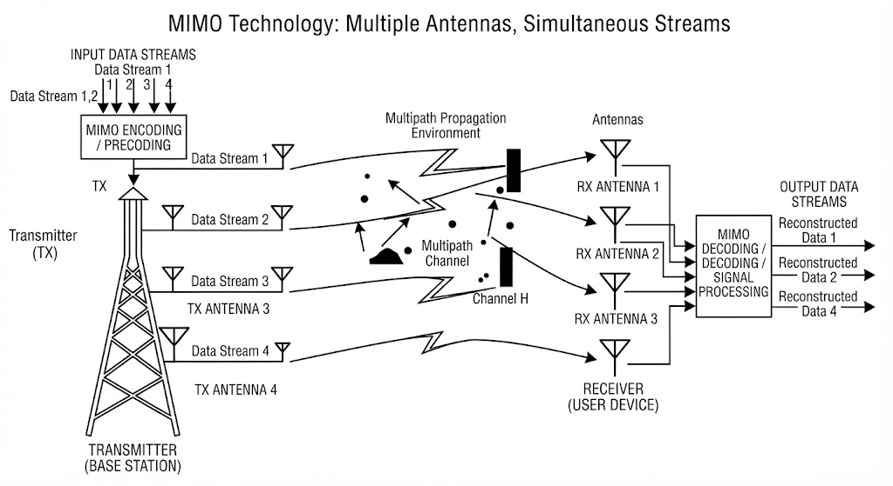

Estándar IEEE 802.11a (1999)
Fue uno de los primeros protocolos comerciales en operar en la banda de frecuencias de 5 GHz, lo que le permitía en su época evitar las aglomeraciones e interferencias comunes de otros electrodomésticos.
- Velocidad teórica máxima: Hasta 54 Mbps.
- Ventaja principal: Menor nivel de interferencia electromagnética por utilizar la banda limpia de 5 GHz.
- Limitación: Menor cobertura de alcance y dificultad para penetrar muros u obstáculos sólidos.
Estándar IEEE 802.11b (1999)
Lanzado de forma simultánea, este protocolo eligió trabajar en la banda de 2.4 GHz. Se convirtió en el estándar definitivo que impulsó la expansión masiva del Wi-Fi en hogares y oficinas de todo el mundo.
- Velocidad teórica máxima: Hasta 11 Mbps.
- Ventaja principal: Gran área de cobertura y excelente capacidad para atravesar paredes.
- Limitación: Su banda de 2.4 GHz suele sufrir interferencias con microondas, teléfonos inalámbricos y Bluetooth.

Estándar IEEE 802.11g (2003)
Representó una mejora sustancial al combinar lo mejor de los mundos anteriores. Opera en la banda de 2.4 GHz (para conservar un buen alcance y compatibilidad) pero adopta la modulación rápida del estándar "a".
- Velocidad teórica máxima: Hasta 54 Mbps.
- Ventaja principal: Alta velocidad en la banda común de 2.4 GHz con compatibilidad con equipos 802.11b.
- Limitación: Hereda los problemas de saturación de la banda de 2.4 GHz.
Estándar IEEE 802.11n / Wi-Fi 4 (2009)
Un cambio radical en las redes inalámbricas. Introdujo el soporte para doble banda (2.4 GHz y 5 GHz) y permitió el uso coordinado de múltiples antenas para multiplicar el rendimiento de transferencia.
- Velocidad teórica máxima: Hasta 600 Mbps.
- Avance clave: Incorporación formal de la tecnología MIMO para mejorar drásticamente la estabilidad y el alcance.

Estándar IEEE 802.11ac / Wi-Fi 5 (2013)
Diseñado exclusivamente para operar en la banda de 5 GHz. Centró sus mejoras en ensanchar los canales de comunicación y optimizar la velocidad en la transmisión de grandes volúmenes de datos.
- Velocidad teórica máxima: Superior a 1 Gbps (gigabit por segundo).
- Avance clave: Introducción de MU-MIMO inicial, permitiendo atender a varios dispositivos de forma más eficiente.
Estándar IEEE 802.11ax / Wi-Fi 6 (2019)
Creado específicamente para responder a la alta densidad de dispositivos conectados en los hogares inteligentes actuales. Funciona en las bandas de 2.4 GHz y 5 GHz (y 6 GHz en Wi-Fi 6E).
- Velocidad teórica máxima: Hasta 9.6 Gbps.
- Avance clave: Uso de OFDMA para dividir canales y atender simultáneamente a múltiples usuarios sin retrasos, reduciendo también el consumo energético de los dispositivos.

Tecnologías MIMO en los Routers (SU-MIMO y MU-MIMO)
MIMO (Multiple-Input, Multiple-Output o Múltiples Entradas, Múltiples Salidas) es una tecnología que emplea múltiples antenas tanto en el router como en el dispositivo receptor para optimizar la transferencia de datos.
En lugar de enviar un flujo único de información de manera secuencial, MIMO utiliza el rebote de las señales en las paredes para transmitir varios flujos de datos en paralelo al mismo tiempo.
- SU-MIMO (Single-User MIMO): Concentra todos los flujos espaciales disponibles de las antenas para atender a un solo dispositivo a la vez a la máxima velocidad posible.
- MU-MIMO (Multi-User MIMO): Permite al router comunicarse de manera simultánea con múltiples dispositivos distintos en paralelo (por ejemplo, enviando video a una televisión y descargando datos en un teléfono al mismo tiempo), eliminando los tiempos de espera en la fila de transmisión.
